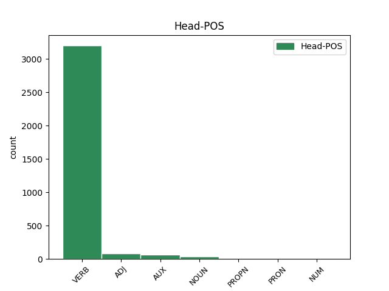

Distribution of features within this leaf

Agreement Rules sorted by frequency.
- When the dependent token is the direct object complements(comp:obj) of the head token, and the dependent token is NOUN.
1 sind _ _ _ _ 0 _ _ _
2 auk _ _ _ _ 0 _ _ _
3 managai _ _ _ _ 0 _ _ _
4 ungaƕairbai _ _ _ _ 0 _ _ _
5 lausaiwaurdai _ _ _ _ 0 _ _ _
6 lutondans _ _ _ _ 0 _ _ _
7 þishun _ _ _ _ 0 _ _ _
8 þai _ _ _ _ 0 _ _ _
9 us _ _ _ _ 0 _ _ _
10 bimaita _ _ _ _ 0 _ _ _
11 þanzei _ _ _ _ 0 _ _ _
12 skal _ _ _ _ 0 _ _ _
13 gasakan _ _ _ _ 0 _ _ _
14 þaiei _ _ _ _ 0 _ _ _
15 gardins gards NOUN Nb Case=Acc|Gender=Masc|Number=Plur 17 comp:obj _ ref=TIT_1.11
16 allans _ _ _ _ 0 _ _ _
17 uswaltjand us-waltjan VERB V- Mood=Ind|Number=Plur|Person=3|Tense=Pres|VerbForm=Fin|Voice=Act 0 _ _ _
18 laisjandans _ _ _ _ 0 _ _ _
19 þatei _ _ _ _ 0 _ _ _
20 ni _ _ _ _ 0 _ _ _
21 skuld _ _ _ _ 0 _ _ _
22 ist _ _ _ _ 0 _ _ _
23 in _ _ _ _ 0 _ _ _
24 faihugairneins _ _ _ _ 0 _ _ _
1 Iþ _ _ _ _ 0 _ _ _
2 þu _ _ _ _ 0 _ _ _
3 rodei _ _ _ _ 0 _ _ _
4 þatei saei PRON Pr Case=Acc|Gender=Neut|Number=Sing|PronType=Rel 5 comp:obj _ ref=TIT_2.1
5 gadof ga-dofs* ADJ A- Case=Nom|Degree=Pos|Gender=Neut|Number=Sing|Strength=Strong 0 _ _ _
6 ist _ _ _ _ 0 _ _ _
7 þizai _ _ _ _ 0 _ _ _
8 hailon _ _ _ _ 0 _ _ _
9 laiseinai _ _ _ _ 0 _ _ _
1 in _ _ _ _ 0 _ _ _
2 þizozei _ _ _ _ 0 _ _ _
3 waihtais _ _ _ _ 0 _ _ _
4 bilaiþ _ _ _ _ 0 _ _ _
5 þus _ _ _ _ 0 _ _ _
6 in _ _ _ _ 0 _ _ _
7 Kretai _ _ _ _ 0 _ _ _
8 in _ _ _ _ 0 _ _ _
9 þize _ _ _ _ 0 _ _ _
10 ei _ _ _ _ 0 _ _ _
11 wanata _ _ _ _ 0 _ _ _
12 atgaraihtjais _ _ _ _ 0 _ _ _
13 jah _ _ _ _ 0 _ _ _
14 gasatjais _ _ _ _ 0 _ _ _
15 and _ _ _ _ 0 _ _ _
16 baurgs _ _ _ _ 0 _ _ _
17 praizbwtairein _ _ _ _ 0 _ _ _
18 swaswe _ _ _ _ 0 _ _ _
19 ik _ _ _ _ 0 _ _ _
20 þus þu PRON Pp Case=Dat|Gender=Masc|Number=Sing|Person=2|PronType=Prs 21 comp:obl _ ref=TIT_1.5
21 garaidida ga-raidjan VERB V- Mood=Ind|Number=Sing|Person=1|Tense=Past|VerbForm=Fin|Voice=Act 0 _ _ _
22 jabai _ _ _ _ 0 _ _ _
23 ƕas _ _ _ _ 0 _ _ _
24 ist _ _ _ _ 0 _ _ _
25 ungafairinonds _ _ _ _ 0 _ _ _
26 ainaizos _ _ _ _ 0 _ _ _
27 qenais _ _ _ _ 0 _ _ _
28 aba _ _ _ _ 0 _ _ _
29 barna _ _ _ _ 0 _ _ _
30 habands _ _ _ _ 0 _ _ _
31 galaubeina _ _ _ _ 0 _ _ _
32 ni _ _ _ _ 0 _ _ _
33 in _ _ _ _ 0 _ _ _
34 usqissai _ _ _ _ 0 _ _ _
35 usstiureins _ _ _ _ 0 _ _ _
36 aiþþau _ _ _ _ 0 _ _ _
37 ungaƕairba _ _ _ _ 0 _ _ _
1 Iþ _ _ _ _ 0 _ _ _
2 þu _ _ _ _ 0 _ _ _
3 rodei _ _ _ _ 0 _ _ _
4 þatei _ _ _ _ 0 _ _ _
5 gadof ga-dofs* ADJ A- Case=Nom|Degree=Pos|Gender=Neut|Number=Sing|Strength=Strong 0 _ _ _
6 ist _ _ _ _ 0 _ _ _
7 þizai _ _ _ _ 0 _ _ _
8 hailon _ _ _ _ 0 _ _ _
9 laiseinai laiseins NOUN Nb Case=Dat|Gender=Fem|Number=Sing 5 comp:obl _ ref=TIT_2.1
1 in _ _ _ _ 0 _ _ _
2 þizozei _ _ _ _ 0 _ _ _
3 waihtais _ _ _ _ 0 _ _ _
4 bilaiþ _ _ _ _ 0 _ _ _
5 þus _ _ _ _ 0 _ _ _
6 in _ _ _ _ 0 _ _ _
7 Kretai _ _ _ _ 0 _ _ _
8 in _ _ _ _ 0 _ _ _
9 þize _ _ _ _ 0 _ _ _
10 ei _ _ _ _ 0 _ _ _
11 wanata wans ADJ A- Case=Acc|Degree=Pos|Gender=Neut|Number=Sing|Strength=Strong 12 comp:obj _ ref=TIT_1.5
12 atgaraihtjais at-gáraihtjan VERB V- Mood=Opt|Number=Sing|Person=2|Tense=Pres|VerbForm=Fin|Voice=Act 0 _ _ _
13 jah _ _ _ _ 0 _ _ _
14 gasatjais _ _ _ _ 0 _ _ _
15 and _ _ _ _ 0 _ _ _
16 baurgs _ _ _ _ 0 _ _ _
17 praizbwtairein _ _ _ _ 0 _ _ _
18 swaswe _ _ _ _ 0 _ _ _
19 ik _ _ _ _ 0 _ _ _
20 þus _ _ _ _ 0 _ _ _
21 garaidida _ _ _ _ 0 _ _ _
22 jabai _ _ _ _ 0 _ _ _
23 ƕas _ _ _ _ 0 _ _ _
24 ist _ _ _ _ 0 _ _ _
25 ungafairinonds _ _ _ _ 0 _ _ _
26 ainaizos _ _ _ _ 0 _ _ _
27 qenais _ _ _ _ 0 _ _ _
28 aba _ _ _ _ 0 _ _ _
29 barna _ _ _ _ 0 _ _ _
30 habands _ _ _ _ 0 _ _ _
31 galaubeina _ _ _ _ 0 _ _ _
32 ni _ _ _ _ 0 _ _ _
33 in _ _ _ _ 0 _ _ _
34 usqissai _ _ _ _ 0 _ _ _
35 usstiureins _ _ _ _ 0 _ _ _
36 aiþþau _ _ _ _ 0 _ _ _
37 ungaƕairba _ _ _ _ 0 _ _ _
1 guþ _ _ _ _ 0 _ _ _
2 andhaitand _ _ _ _ 0 _ _ _
3 kunnan _ _ _ _ 0 _ _ _
4 iþ _ _ _ _ 0 _ _ _
5 waurstwam waurstw NOUN Nb Case=Dat|Gender=Neut|Number=Plur 6 udep _ ref=TIT_1.16
6 inwidand in-widan VERB V- Mood=Ind|Number=Plur|Person=3|Tense=Pres|VerbForm=Fin|Voice=Act 0 _ _ _
7 andasetjai _ _ _ _ 0 _ _ _
8 wisandans _ _ _ _ 0 _ _ _
9 jah _ _ _ _ 0 _ _ _
10 ungalaubjandans _ _ _ _ 0 _ _ _
11 jah _ _ _ _ 0 _ _ _
12 du _ _ _ _ 0 _ _ _
13 allamma _ _ _ _ 0 _ _ _
14 waurstwe _ _ _ _ 0 _ _ _
15 godaize _ _ _ _ 0 _ _ _
16 uskusanai _ _ _ _ 0 _ _ _
1 iþ _ _ _ _ 0 _ _ _
2 skalks _ _ _ _ 0 _ _ _
3 fraujins _ _ _ _ 0 _ _ _
4 ni _ _ _ _ 0 _ _ _
5 skal _ _ _ _ 0 _ _ _
6 sakan _ _ _ _ 0 _ _ _
7 ak _ _ _ _ 0 _ _ _
8 qairrus _ _ _ _ 0 _ _ _
9 wisan _ _ _ _ 0 _ _ _
10 wiþra _ _ _ _ 0 _ _ _
11 allans _ _ _ _ 0 _ _ _
12 laiseigs _ _ _ _ 0 _ _ _
13 usþulands _ _ _ _ 0 _ _ _
14 in _ _ _ _ 0 _ _ _
15 qairrein _ _ _ _ 0 _ _ _
16 talzjands talzjan VERB V- Case=Nom|Gender=Masc|Number=Sing|Strength=Strong|Tense=Pres|VerbForm=Part|Voice=Act 0 _ _ _
17 þans _ _ _ _ 0 _ _ _
18 andstandandans _ _ _ _ 0 _ _ _
19 niu _ _ _ _ 0 _ _ _
20 ƕan _ _ _ _ 0 _ _ _
21 gibai giban VERB V- Mood=Opt|Number=Sing|Person=3|Tense=Pres|VerbForm=Fin|Voice=Act 16 comp:obj _ ref=2TIM_2.25
22 im _ _ _ _ 0 _ _ _
23 guþ _ _ _ _ 0 _ _ _
24 idreiga _ _ _ _ 0 _ _ _
25 du _ _ _ _ 0 _ _ _
26 ufkunþja _ _ _ _ 0 _ _ _
27 sunjos _ _ _ _ 0 _ _ _
28 jah _ _ _ _ 0 _ _ _
29 usskarjaindau _ _ _ _ 0 _ _ _
30 us _ _ _ _ 0 _ _ _
31 unhulþins _ _ _ _ 0 _ _ _
32 wruggon _ _ _ _ 0 _ _ _
33 fram _ _ _ _ 0 _ _ _
34 þammei _ _ _ _ 0 _ _ _
35 gafahanai _ _ _ _ 0 _ _ _
36 habanda _ _ _ _ 0 _ _ _
37 afar _ _ _ _ 0 _ _ _
38 is _ _ _ _ 0 _ _ _
39 wiljin _ _ _ _ 0 _ _ _
1 aþþan _ _ _ _ 0 _ _ _
2 habandans _ _ _ _ 0 _ _ _
3 usfodein _ _ _ _ 0 _ _ _
4 jah _ _ _ _ 0 _ _ _
5 gaskadwein _ _ _ _ 0 _ _ _
6 þaim sa ADJ Pd Case=Dat|Gender=Fem|Number=Plur 8 comp:obl _ ref=1TIM_6.8
7 uh _ _ _ _ 0 _ _ _
8 ganohidai ga-nohjan VERB V- Aspect=Perf|Case=Nom|Gender=Masc|Number=Plur|Strength=Strong|Tense=Past|VerbForm=Part|Voice=Pass 0 _ _ _
9 sijaima _ _ _ _ 0 _ _ _
1 Marku _ _ _ _ 0 _ _ _
2 andnimands _ _ _ _ 0 _ _ _
3 brigg _ _ _ _ 0 _ _ _
4 miþ _ _ _ _ 0 _ _ _
5 þus _ _ _ _ 0 _ _ _
6 silbin _ _ _ _ 0 _ _ _
7 unte _ _ _ _ 0 _ _ _
8 ist _ _ _ _ 0 _ _ _
9 mis ik PRON Pp Case=Dat|Gender=Masc|Number=Sing|Person=1|PronType=Prs 10 udep _ ref=2TIM_4.11
10 bruks brūks ADJ A- Case=Nom|Degree=Pos|Gender=Masc|Number=Sing|Strength=Strong 0 _ _ _
11 du _ _ _ _ 0 _ _ _
12 andbahtja _ _ _ _ 0 _ _ _
1 aþþan _ _ _ _ 0 _ _ _
2 Twkeiku Twkeikus PROPN Ne Case=Acc|Gender=Masc|Number=Sing 3 comp:obj _ ref=2TIM_4.12
3 insandida in-sandjan VERB V- Mood=Ind|Number=Sing|Person=1|Tense=Past|VerbForm=Fin|Voice=Act 0 _ _ _
4 in _ _ _ _ 0 _ _ _
5 Aifaison _ _ _ _ 0 _ _ _
1 Pawlus Pawlus PROPN Ne Case=Nom|Gender=Masc|Number=Sing 0 _ _ _
2 skalks _ _ _ _ 0 _ _ _
3 gudis _ _ _ _ 0 _ _ _
4 iþ _ _ _ _ 0 _ _ _
5 apaustaulus _ _ _ _ 0 _ _ _
6 Iesuis _ _ _ _ 0 _ _ _
7 Xristaus _ _ _ _ 0 _ _ _
8 bi _ _ _ _ 0 _ _ _
9 galaubeinai _ _ _ _ 0 _ _ _
10 gawalidaize _ _ _ _ 0 _ _ _
11 gudis _ _ _ _ 0 _ _ _
12 jah _ _ _ _ 0 _ _ _
13 ufkunþja _ _ _ _ 0 _ _ _
14 sunjos _ _ _ _ 0 _ _ _
15 sei _ _ _ _ 0 _ _ _
16 bi _ _ _ _ 0 _ _ _
17 gagudein _ _ _ _ 0 _ _ _
18 ist _ _ _ _ 0 _ _ _
19 du _ _ _ _ 0 _ _ _
20 wenai _ _ _ _ 0 _ _ _
21 libainais _ _ _ _ 0 _ _ _
22 aiweinons _ _ _ _ 0 _ _ _
23 þoei _ _ _ _ 0 _ _ _
24 gahaihait _ _ _ _ 0 _ _ _
25 unliugands _ _ _ _ 0 _ _ _
26 guþ _ _ _ _ 0 _ _ _
27 faur _ _ _ _ 0 _ _ _
28 mela _ _ _ _ 0 _ _ _
29 aiweina _ _ _ _ 0 _ _ _
30 iþ _ _ _ _ 0 _ _ _
31 ataugida _ _ _ _ 0 _ _ _
32 mela _ _ _ _ 0 _ _ _
33 swesamma _ _ _ _ 0 _ _ _
34 waurd _ _ _ _ 0 _ _ _
35 sein _ _ _ _ 0 _ _ _
36 in _ _ _ _ 0 _ _ _
37 mereinai _ _ _ _ 0 _ _ _
38 sei _ _ _ _ 0 _ _ _
39 gatrauaida _ _ _ _ 0 _ _ _
40 ist _ _ _ _ 0 _ _ _
41 mis _ _ _ _ 0 _ _ _
42 bi _ _ _ _ 0 _ _ _
43 anabusnai _ _ _ _ 0 _ _ _
44 nasjandis _ _ _ _ 0 _ _ _
45 unsaris _ _ _ _ 0 _ _ _
46 gudis _ _ _ _ 0 _ _ _
47 Teitau Teitus PROPN Ne Case=Dat|Gender=Masc|Number=Sing 1 comp:obl _ ref=TIT_1.4
48 walisin _ _ _ _ 0 _ _ _
49 barna _ _ _ _ 0 _ _ _
50 bi _ _ _ _ 0 _ _ _
51 gamainjai _ _ _ _ 0 _ _ _
52 galaubeinai _ _ _ _ 0 _ _ _
1 Iþ _ _ _ _ 0 _ _ _
2 þu _ _ _ _ 0 _ _ _
3 rodei rodjan VERB V- Mood=Imp|Number=Sing|Person=2|Tense=Pres|VerbForm=Fin|Voice=Act 0 _ _ _
4 þatei _ _ _ _ 0 _ _ _
5 gadof _ _ _ _ 0 _ _ _
6 ist wisan AUX V- Mood=Ind|Number=Sing|Person=3|Tense=Pres|VerbForm=Fin|Voice=Act 3 comp:obj _ LId=1|ref=TIT_2.1
7 þizai _ _ _ _ 0 _ _ _
8 hailon _ _ _ _ 0 _ _ _
9 laiseinai _ _ _ _ 0 _ _ _
1 jah _ _ _ _ 0 _ _ _
2 awiliudo awiliudon VERB V- Mood=Ind|Number=Sing|Person=1|Tense=Pres|VerbForm=Fin|Voice=Act 0 _ _ _
3 þamma _ _ _ _ 0 _ _ _
4 inswinþjandin in-swinþjan VERB V- Case=Dat|Gender=Masc|Number=Sing|Strength=Weak|Tense=Pres|VerbForm=Part|Voice=Act 2 comp:obl _ ref=1TIM_1.12
5 mik _ _ _ _ 0 _ _ _
6 Xristau _ _ _ _ 0 _ _ _
7 Iesu _ _ _ _ 0 _ _ _
8 fraujin _ _ _ _ 0 _ _ _
9 unsaramma _ _ _ _ 0 _ _ _
10 unte _ _ _ _ 0 _ _ _
11 triggwana _ _ _ _ 0 _ _ _
12 mik _ _ _ _ 0 _ _ _
13 rahnida _ _ _ _ 0 _ _ _
14 gasatjands _ _ _ _ 0 _ _ _
15 in _ _ _ _ 0 _ _ _
16 andbahtja _ _ _ _ 0 _ _ _
17 ikei _ _ _ _ 0 _ _ _
18 faura _ _ _ _ 0 _ _ _
19 was _ _ _ _ 0 _ _ _
20 wajamerjands _ _ _ _ 0 _ _ _
21 jah _ _ _ _ 0 _ _ _
22 wraks _ _ _ _ 0 _ _ _
23 jah _ _ _ _ 0 _ _ _
24 ufbrikands _ _ _ _ 0 _ _ _
1 aþþan _ _ _ _ 0 _ _ _
2 sweþauh _ _ _ _ 0 _ _ _
3 all _ _ _ _ 0 _ _ _
4 domja _ _ _ _ 0 _ _ _
5 sleiþa _ _ _ _ 0 _ _ _
6 wisan _ _ _ _ 0 _ _ _
7 in _ _ _ _ 0 _ _ _
8 ufarassaus _ _ _ _ 0 _ _ _
9 kunþjis _ _ _ _ 0 _ _ _
10 Xristaus _ _ _ _ 0 _ _ _
11 Iesuis _ _ _ _ 0 _ _ _
12 fraujins _ _ _ _ 0 _ _ _
13 meinis _ _ _ _ 0 _ _ _
14 in _ _ _ _ 0 _ _ _
15 þizei _ _ _ _ 0 _ _ _
16 allamma alls ADJ Px Case=Dat|Gender=Neut|Number=Sing 18 udep _ ref=PHIL_3.8
17 gasleiþiþs _ _ _ _ 0 _ _ _
18 im wisan AUX V- Mood=Ind|Number=Sing|Person=1|Tense=Pres|VerbForm=Fin|Voice=Act 0 _ _ _
19 jah _ _ _ _ 0 _ _ _
20 domja _ _ _ _ 0 _ _ _
21 smarnos _ _ _ _ 0 _ _ _
22 wisan _ _ _ _ 0 _ _ _
23 allata _ _ _ _ 0 _ _ _
24 ei _ _ _ _ 0 _ _ _
25 Xristau _ _ _ _ 0 _ _ _
26 du _ _ _ _ 0 _ _ _
27 gawaurkja _ _ _ _ 0 _ _ _
28 habau _ _ _ _ 0 _ _ _
29 jah _ _ _ _ 0 _ _ _
30 bigitaidau _ _ _ _ 0 _ _ _
31 in _ _ _ _ 0 _ _ _
32 imma _ _ _ _ 0 _ _ _
33 ni _ _ _ _ 0 _ _ _
34 habands _ _ _ _ 0 _ _ _
35 meina _ _ _ _ 0 _ _ _
36 garaihtein _ _ _ _ 0 _ _ _
37 þo _ _ _ _ 0 _ _ _
38 us _ _ _ _ 0 _ _ _
39 witoda _ _ _ _ 0 _ _ _
40 akei _ _ _ _ 0 _ _ _
41 þo _ _ _ _ 0 _ _ _
42 þairh _ _ _ _ 0 _ _ _
43 galaubein _ _ _ _ 0 _ _ _
44 Xristaus _ _ _ _ 0 _ _ _
45 Iesuis _ _ _ _ 0 _ _ _
46 sei _ _ _ _ 0 _ _ _
47 us _ _ _ _ 0 _ _ _
48 guda _ _ _ _ 0 _ _ _
49 ist _ _ _ _ 0 _ _ _
50 garaihtei _ _ _ _ 0 _ _ _
51 ana _ _ _ _ 0 _ _ _
52 galaubeinai _ _ _ _ 0 _ _ _
53 du _ _ _ _ 0 _ _ _
54 kunnan _ _ _ _ 0 _ _ _
55 ina _ _ _ _ 0 _ _ _
56 jah _ _ _ _ 0 _ _ _
57 maht _ _ _ _ 0 _ _ _
58 usstassais _ _ _ _ 0 _ _ _
59 is _ _ _ _ 0 _ _ _
60 jah _ _ _ _ 0 _ _ _
61 gamainduþ _ _ _ _ 0 _ _ _
62 þulaine _ _ _ _ 0 _ _ _
63 is _ _ _ _ 0 _ _ _
1 andizuh _ _ _ _ 0 _ _ _
2 ainana ains NUM Ma Case=Acc|Gender=Masc|Number=Sing 3 comp:obj _ ref=LUKE_16.13
3 fijaiþ fijan VERB V- Mood=Ind|Number=Sing|Person=3|Tense=Pres|VerbForm=Fin|Voice=Act 0 _ _ _
4 jah _ _ _ _ 0 _ _ _
5 anþarana _ _ _ _ 0 _ _ _
6 frijoþ _ _ _ _ 0 _ _ _
7 aiþþau _ _ _ _ 0 _ _ _
8 ainamma _ _ _ _ 0 _ _ _
9 andtiloþ _ _ _ _ 0 _ _ _
10 iþ _ _ _ _ 0 _ _ _
11 anþaramma _ _ _ _ 0 _ _ _
12 frakann _ _ _ _ 0 _ _ _
1 andizuh _ _ _ _ 0 _ _ _
2 ainana _ _ _ _ 0 _ _ _
3 fijaiþ _ _ _ _ 0 _ _ _
4 jah _ _ _ _ 0 _ _ _
5 anþarana _ _ _ _ 0 _ _ _
6 frijoþ _ _ _ _ 0 _ _ _
7 aiþþau _ _ _ _ 0 _ _ _
8 ainamma ains NUM Ma Case=Dat|Gender=Masc|Number=Sing 9 comp:obl _ ref=LUKE_16.13
9 andtiloþ and-tilon VERB V- Mood=Ind|Number=Sing|Person=3|Tense=Pres|VerbForm=Fin|Voice=Act 0 _ _ _
10 iþ _ _ _ _ 0 _ _ _
11 anþaramma _ _ _ _ 0 _ _ _
12 frakann _ _ _ _ 0 _ _ _
1 swaei _ _ _ _ 0 _ _ _
2 nu _ _ _ _ 0 _ _ _
3 razdos _ _ _ _ 0 _ _ _
4 du _ _ _ _ 0 _ _ _
5 bandwai _ _ _ _ 0 _ _ _
6 sind wisan AUX V- Mood=Ind|Number=Plur|Person=3|Tense=Pres|VerbForm=Fin|Voice=Act 0 _ _ _
7 ni _ _ _ _ 0 _ _ _
8 þaim _ _ _ _ 0 _ _ _
9 galaubjandam ga-laubjan VERB V- Case=Dat|Gender=Masc|Number=Plur|Strength=Weak|Tense=Pres|VerbForm=Part|Voice=Act 6 udep _ ref=1COR_14.22
10 ak _ _ _ _ 0 _ _ _
11 þaim _ _ _ _ 0 _ _ _
12 ungalaubjandam _ _ _ _ 0 _ _ _
1 akei _ _ _ _ 0 _ _ _
2 þan _ _ _ _ 0 _ _ _
3 sweþauh _ _ _ _ 0 _ _ _
4 ni _ _ _ _ 0 _ _ _
5 kunnandans _ _ _ _ 0 _ _ _
6 guþ _ _ _ _ 0 _ _ _
7 þaim _ _ _ _ 0 _ _ _
8 þoei _ _ _ _ 0 _ _ _
9 wistai _ _ _ _ 0 _ _ _
10 ni _ _ _ _ 0 _ _ _
11 sind wisan AUX V- Mood=Ind|Number=Plur|Person=3|Tense=Pres|VerbForm=Fin|Voice=Act 13 comp:obl _ LId=1|ref=GAL_4.8
12 guda _ _ _ _ 0 _ _ _
13 skalkinodeduþ skalkinon VERB V- Mood=Ind|Number=Plur|Person=2|Tense=Past|VerbForm=Fin|Voice=Act 0 _ _ _
1 ni _ _ _ _ 0 _ _ _
2 auk _ _ _ _ 0 _ _ _
3 manna _ _ _ _ 0 _ _ _
4 ƕanhun _ _ _ _ 0 _ _ _
5 sein _ _ _ _ 0 _ _ _
6 leik _ _ _ _ 0 _ _ _
7 fijaida _ _ _ _ 0 _ _ _
8 ak _ _ _ _ 0 _ _ _
9 fodeiþ _ _ _ _ 0 _ _ _
10 ita _ _ _ _ 0 _ _ _
11 jah _ _ _ _ 0 _ _ _
12 warmeiþ warmjan VERB V- Mood=Ind|Number=Sing|Person=3|Tense=Pres|VerbForm=Fin|Voice=Act 0 _ _ _
13 swaswe _ _ _ _ 0 _ _ _
14 jah _ _ _ _ 0 _ _ _
15 Xristus Xristus PROPN Ne Case=Nom|Gender=Masc|Number=Sing 12 udep _ ref=EPH_5.29
16 aikklesjon _ _ _ _ 0 _ _ _
Disagree Examples:
1 þanuh _ _ _ _ 0 _ _ _
2 atberun at-bairan VERB V- Mood=Ind|Number=Plur|Person=3|Tense=Past|VerbForm=Fin|Voice=Act 0 _ _ _
3 du _ _ _ _ 0 _ _ _
4 imma _ _ _ _ 0 _ _ _
5 usliþan usliþa ADJ A- Case=Acc|Degree=Pos|Gender=Masc|Number=Sing|Strength=Weak 2 comp:obj _ ref=MATT_9.2
6 ana _ _ _ _ 0 _ _ _
7 ligra _ _ _ _ 0 _ _ _
8 ligandan _ _ _ _ 0 _ _ _
1 afletanda af-letan VERB V- Mood=Ind|Number=Plur|Person=3|Tense=Pres|VerbForm=Fin|Voice=Pass 0 _ _ _
2 þus þu PRON Pp Case=Dat|Gender=Masc|Number=Sing|Person=2|PronType=Prs 1 comp:obl _ ref=MATT_9.2
3 frawaurhteis _ _ _ _ 0 _ _ _
4 þeinos _ _ _ _ 0 _ _ _
1 jah _ _ _ _ 0 _ _ _
2 witands witan VERB V- Case=Nom|Gender=Masc|Number=Sing|Strength=Strong|Tense=Pres|VerbForm=Part|Voice=Act 0 _ _ _
3 Iesus _ _ _ _ 0 _ _ _
4 þos _ _ _ _ 0 _ _ _
5 mitonins mitons NOUN Nb Case=Acc|Gender=Fem|Number=Plur 2 comp:obj _ ref=MATT_9.4
6 ize _ _ _ _ 0 _ _ _
7 qaþ _ _ _ _ 0 _ _ _
1 ƕaþar _ _ _ _ 0 _ _ _
2 ist _ _ _ _ 0 _ _ _
3 raihtis _ _ _ _ 0 _ _ _
4 azetizo _ _ _ _ 0 _ _ _
5 qiþan _ _ _ _ 0 _ _ _
6 afletanda af-letan VERB V- Mood=Ind|Number=Plur|Person=3|Tense=Pres|VerbForm=Fin|Voice=Pass 0 _ _ _
7 þus þu PRON Pp Case=Dat|Gender=Masc|Number=Sing|Person=2|PronType=Prs 6 comp:obl _ ref=MATT_9.5
8 frawaurhteis _ _ _ _ 0 _ _ _
9 þau _ _ _ _ 0 _ _ _
10 qiþan _ _ _ _ 0 _ _ _
1 gasaiƕandeins _ _ _ _ 0 _ _ _
2 þan _ _ _ _ 0 _ _ _
3 manageins _ _ _ _ 0 _ _ _
4 ohtedun _ _ _ _ 0 _ _ _
5 sildaleikjandans _ _ _ _ 0 _ _ _
6 jah _ _ _ _ 0 _ _ _
7 mikilidedun mikiljan VERB V- Mood=Ind|Number=Plur|Person=3|Tense=Past|VerbForm=Fin|Voice=Act 0 _ _ _
8 guþ guþ NOUN Nb Case=Acc|Gender=Masc|Number=Sing 7 comp:obj _ ref=MATT_9.8
9 þana _ _ _ _ 0 _ _ _
10 gibandan _ _ _ _ 0 _ _ _
11 waldufni _ _ _ _ 0 _ _ _
12 swaleikata _ _ _ _ 0 _ _ _
13 mannam _ _ _ _ 0 _ _ _